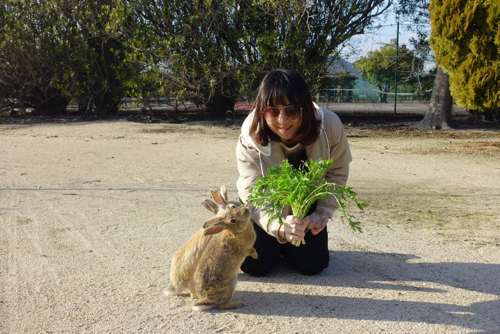

Yuki
我的小毛球
她是道奇兔，棕灰色，眼睛炯炯有神，有著迷人的眼線，有點傲嬌，有點黏人，九年的陪伴。 她不說話，但存在感很強。每天回家看到她，煩惱瞬間不翼而飛。
Yuki 的一生
三千多個日子大學畢業那年，有段時間常去逛公館的寶羅寵物店（現址為辛殿麻辣鍋），看過好幾批小兔子進到寵物店又離開，當時想著兔子是很棒的寵物選擇，做了一些功課後，了解到兔子也是可以有互動的、可以訓練的、壽命大約十年，儘管對未來十年極度茫然，仍下定決心要陪伴一個小生命的一生。
還記得那次是一批三隻小兔子，過了幾天再去看只剩下一隻，當時寵物兔還不太常見，大家對於兔子的觀念有很大的錯誤，比方說要吃紅蘿蔔、不能喝水、很臭等等，兔子的生命對商人來說似乎也沒什麼價值，我買了兔籠店家就說那送我兔子吧，種種緣分讓妳成為我生命中很重要的一部分，Yuki 寶貝。
2013/10/07，Yuki 成為了我的家人，當時約一個半月大，我當起自家的戶政事務所將 Yuki 的出生日期訂在 8/22，和我月份相同日期雙倍的日子，是隻棕灰色的道奇兔，右耳是棕灰色左耳是白色，有著一雙灰色的眼睛。
當時 Yuki 才一個手掌大，可以窩在飼料碗，也可以平躺在便盆，是應當還需要喝母奶長大的階段。
沒過幾天發現 Yuki 的額頭開始脫毛，去了古亭動物醫院看醫生，認識了吳醫師，醫師說是疥癬，寵物店很常見的傳染病，需要打幾次針，看 Yuki 被打針時都沒有反抗也沒有不開心，覺得這小不點真勇敢；也在這時候確定了 Yuki 是女孩，另外醫師也特別交代幼兔要注意保暖，於是買了保溫燈。
有次看到 Yuki 的鬍鬚卷卷的，應該是太靠近保溫燈有點燒焦了，後來保溫燈只用了這一個冬天。
2014 年農曆春節，有位香港人學妹因為要返家，需要找兔子寄宿，讓 Yuki 認識了大兩歲同是道奇的哥哥 Tuki，很驚喜地，兩隻兔子一見鍾情，相處得好甜蜜，Yuki 也向 Tuki 學習怎麼使用便盆，也學了女孩不該學的動作，不過 Tuki 當時已經結紮。
感情雖好但一起放風時第一件事是跑去對方的籠子吃東西，真不愧是兩歲智商的兔子，就像小朋友總會覺得人家的東西比較好，事實上完全一樣呀！
2014/06/09，Yuki 到了可以結紮的年紀和體重，跟著吳醫師到了長宏動物醫院，讓 Yuki 絕育了。印象中只花了不到四千元，幸好 Yuki 沒有因此恨我，只是每天餵藥都跑給我追，還不斷想把頭套拆下來，辛苦她了。
暑假時去了趟日本旅行，也包括了位在瀨戶內海的兔島，要不是當了兔奴可能也不會想到要去兔島吧；當時在網路上幫不能一起出國的 Yuki 找了寄宿，認識了 Ki 醬麻，Ki 醬麻天天幫 Yuki 準備蔬果大餐，還有大理石可以躺，後來接 Yuki 回來還對我生悶氣好幾天，我也買了塊大理石補償她。說不定 Yuki 現在也認識了 Ki 醬唷！
下半年時排到了教職員工宿舍，讓 Yuki 當了偷渡寵物，幸好 Yuki 已經學會了在便盆上廁所，可以很輕鬆地維持房間整潔。也在這時候第二次讓 Tuki 來寄宿，相隔一年才又見面的小倆口，感情一樣濃密，時常互相依偎緊靠著彼此。
Tuki 麻畢業後帶著 Tuki 搭飛機回了香港，小倆口就再也沒見面了。謝謝 Tuki 麻當年如此信任我。
年中時換了工作，也在公司附近找了新住處，是間舊公寓隔出來的邊間套房，有一小部分是原本的小陽台外推出來的，就這麼剛好適合擺兔籠佈置 Yuki 的家；也是在這裡開始只要我在家時就完全放養，每天早上 Yuki 會踩我叫我起床餵她吃早餐。
咬東西是兔子的天性，幾年下來 Yuki 咬斷過無數條電線和網路線，而且還常常專挑蘋果的，我的技能樹點了些接電線，但壓網路線終究沒能學會；衣服、床單、包包、鞋帶、夾腳拖、地毯、書， 什麼東西都有 Yuki 的咬痕，有幾次我在床上滑手機疏忽了她，毫不客氣地直接在螢幕保護貼上留下齒痕；差點忘了小時候的 Yuki 會吃我的頭髮！幸好長大就沒這個嗜好了，不然我可能要長年戴著帽子睡覺。
如果回家時間晚了，Yuki 會站在一個可以望著門口的地方癡癡地等我進門，然後跑過來迎接我；Yuki 總是可以給我抱著，跟她說「親一個」她就會舔舔我的鼻子，手伸過去就會預備好摸頭姿勢，冬天時還願意讓我把雙腳放在她身體下，完全是優質暖暖包。
後來才開始認識愛兔協會，Yuki 在愛兔假期度假過很多次，可以在出遊時透過網路攝影機的即時畫面看看 Yuki 很令人放心；這幾年去當過幾次志工，在愛兔協會有高雄據點後也開過幾次愛兔順風車，最開心的是寵物展能帶 Yuki 去愛兔協會的攤位玩耍和參加短跑比賽，身為選手的 Yuki 好失控呀！
喜歡煮飯的我，每次買蔬菜時總會選擇 Yuki 也能吃的菜，每次吃水果時也總會分 Yuki 吃一口，兔子能吃什麼不能吃什麼漸漸在我腦中形成一本字典，還會針對 Yuki 的喜好加上標籤。幫 Yuki 想菜單成了一大樂趣，也試著自己種小麥草、薄荷，也喜歡買些點心和玩具，甚至還跟她玩遊戲，應該也給 Yuki 帶來多采多姿的生活吧。
2018 年單車環島時，我爸開車載 Yuki 從高雄到台東，也因此能和 Yuki 在南迴公路的壽卡鐵馬驛站合影，也是 Yuki 唯一一次住飯店的難得體驗。
在台北搬過五次家、住過五個行政區，Yuki 也陪我度過這麼多次的遷居，也跟著我多次搭高鐵往返北高，不過身為兔子應該不在意住址門牌，只求一個字：大！於是在 2019 年一次出國旅行前帶 Yuki 回高雄，決定讓 Yuki 長時間住在大房子享福。
後來只有一次和我一起回台北跟我窩在小套房短暫時間，也讓 Yuki 可能有點討厭我這媽媽，每次見到我就是剪指甲、梳毛、甚至看醫生，準沒好事！有次回高雄一踏進家門，Yuki 朝我跑來，沒跑幾步就煞車，然後轉身離去，Yuki 應該是在想：「是馬麻耶好開心～～啊啊但我不想剪指甲！」
2020 年，Yuki 登上了愛兔協會的月曆，從此我家中的月曆停留在 2020 年 9 月。
2021 年 5 月，因為疫情而公司宣佈開始居家辦公，我也回到了高雄和家人還有 Yuki 一起生活；在這期間發現 Yuki 的排便不太好，擔心是健康已經亮了紅燈，於是在 2021/07/28 帶 Yuki 去了評價非常好且離家近的兔科專門動物醫院。
經過一連串的診察與治療，應該有超過半小時，當時我確實很感謝醫師的耐心，能感受到醫師對於小動物的愛；殊不知這是惡夢的開始，回到家發現 Yuki 仍處在非常驚嚇情緒，不吃不喝也不趴下來睡覺，養兔子的人應該都知道，兔子不吃不喝幾小時就非常危險，我完全嚇壞了。我無法責怪醫師，而身為飼主我當下也沒有拒絕診療，面對 Yuki 是滿滿的心疼和懊惱。
經過幾天的灌食，接著一根草一根草餵，Yuki 總算願意自己吃吃喝喝。後來為了返回辦公室上班回到台北，我讓 Yuki 留在高雄給我媽照顧。半年下來，Yuki 的個性全變了、習慣的休息地點換了、喜歡的零食也不同了，聽到搖飼料的聲音再也不會跑過來了。但其他方面都有好轉，仍然是隻可愛又精明的兔寶。
一開始就知道十歲是寵物兔生理構造上的年齡界限，但已步入高齡的 Yuki 還是很有精神，且曾經做過會引起歪頭症的兔腦炎微孢子蟲檢查也是陰性，也自認為是還算盡責的兔奴，再加上聽說過不少超過十五歲的兔瑞，讓我不太願意去思考要怎麼面對 Yuki 的生命終點。
就這樣 Yuki 在高雄過著養老生活，2022/10/10 國慶連假回高雄還有見到她可愛的模樣，卻也是最後一面。
2022/11/23 星期三清晨，Yuki 在我媽的懷裡去當小天使了。而我是在週末回高雄投票才得知，看到空蕩蕩的籠子，有著無法言喻的失落。回想星期三下午我還難得傳 LINE 問我媽 Yuki 好嗎，得到回覆說不太好，我也沒再追問，晚上我還哭著在查寵物後事的資訊，還有能做怎麼樣的紀念，也許冥冥之中感受到 Yuki 和我道別吧。
如果說有沒有已經來不及才在後悔的事，肯定是有的，我從沒拍到過 Yuki 打哈欠、側身倒下休息、跳兔子舞的模樣，我曾經想要寫 Yuki 日記但只寫了幾天就放棄，我好想和 Yuki 去拍寵物攝影，我期待著可以讓 Yuki 當孩子的大姊姊，我甚至沒有見到最後一面⋯
最後安葬在老家的院子，旁邊種了一排排的蔬菜和一整片的檸檬樹，希望 Yuki 能在蔬菜果園開心地跑跑、跳兔子舞！
相片集
Yuki 的日子
Yuki
大久野島之旅
日本 · 廣島縣廣島縣有一座島叫大久野島，又叫兔子島。島上住了幾百隻放養的野兔，你走到哪裡，牠們就跟到哪裡。帶了一大袋紅蘿蔔和牧草，就出發了。
那天整個人被兔兔圍繞著，快樂是真的快樂，但也說不上來為什麼有一點想念的感覺。後來回想，大概就是那種距離感吧，在場的兔兔都好親人，但你心裡掛著的那隻不在這裡。

兔兔島之旅褓母日記
愛兔協會 · 短期褓母加入台灣愛兔協會，擔任短期褓母志工，接待需要暫時照顧的兔兔們，陪牠們等待新家。每一隻來家裡住過的都不一樣，但每一隻都讓人更深刻理解了什麼叫「以兔為家」。
Yuki
2013 · 08 · 22 – 2022 · 11 · 23
她不說話，但存在感很強。
每天回家看到她，莫名就覺得沒什麼好煩的。
這種安靜的陪伴，是很珍貴的禮物。